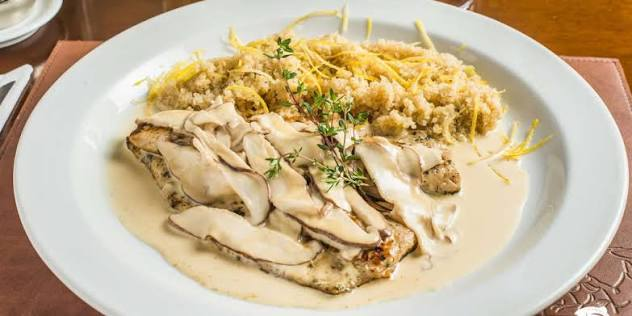
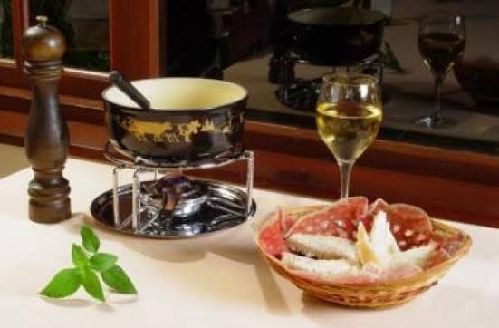
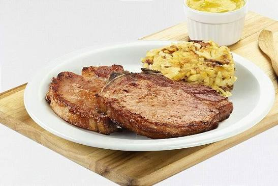
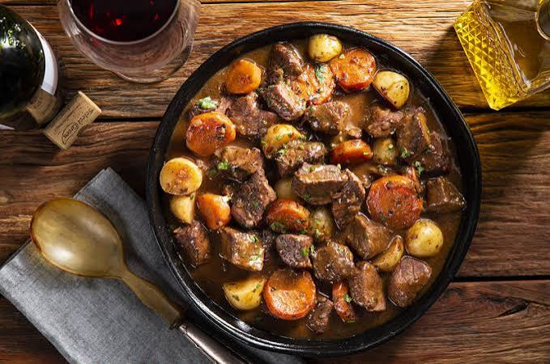
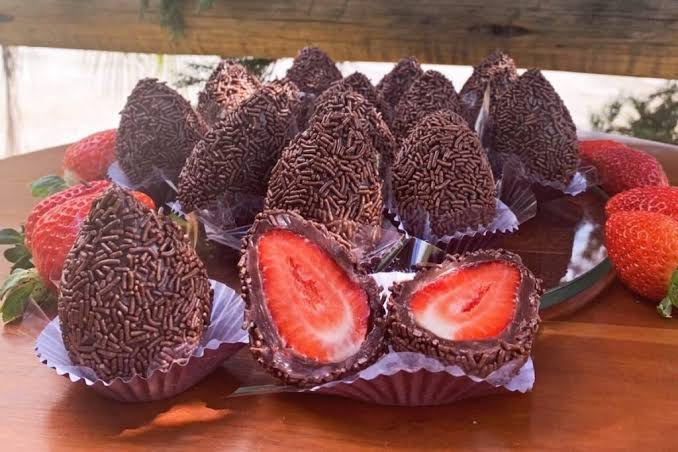

Nova Friburgo foi colonizada por suíços, alemães e italianos. Esse fator proporciona à cidade uma enorme variedade de pratos típicos deliciosos. O clima de montanha, as cervejas artesanais e a culinária europeia adaptada à Serra Fluminense fazem da cidade um dos melhores destinos gastronômicos do estado:
Truta da Serra
Fondue:
Kassler:
Goulasch:
Sobremesas de Morango com Chocolate:

A truta é o prato mais emblemático da região. A cidade produz toneladas desse peixe por mês. É servida grelhada, ao molho de maracujá, manga, amêndoas ou em receitas exclusivas criadas pelos chefs locais. A qualidade limpa e fria das águas da serra favorece a criação desse peixe. Esse prato típico pode ser encontrado em diversos locais como: Arco Iris Truta, Truta Le Bon Bec e Truta & Boa Cia.

Prato de origem suíça perfeito para o inverno serrano. Consiste em uma mistura de queijos fundidos aquecidos (servidos com pães e batatas), carnes grelhadas na hora acompanhadas de molhos variados, ou chocolate derretido para mergulhar frutas frescas. Esse prato típico pode ser encontrado em diversos locais como: Bräun & Bräun (Mury) e também em Truta Le Bon Bec.

Conhecido como a bisteca ou carré suíno da culinária alemã, é um corte curado e levemente defumado, suculento, servido geralmente com chucrute e batatas. Esse prato típico pode ser encontrado em diversos locais como: Restaurante Bürgermeister (Cônego) e em Bräun & Bräun .

Ensopado de carne bovina ou suína de origem centro-europeia, generosamente temperado com páprica e cozido lentamente até formar um molho encorpado. Esse prato típico pode ser encontrado em diversos locais como: Restaurante Bürgermeister (Cônego) e em Bräun & Bräun.
